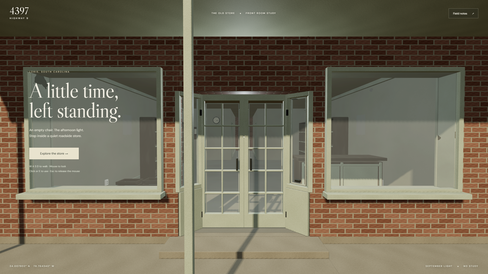
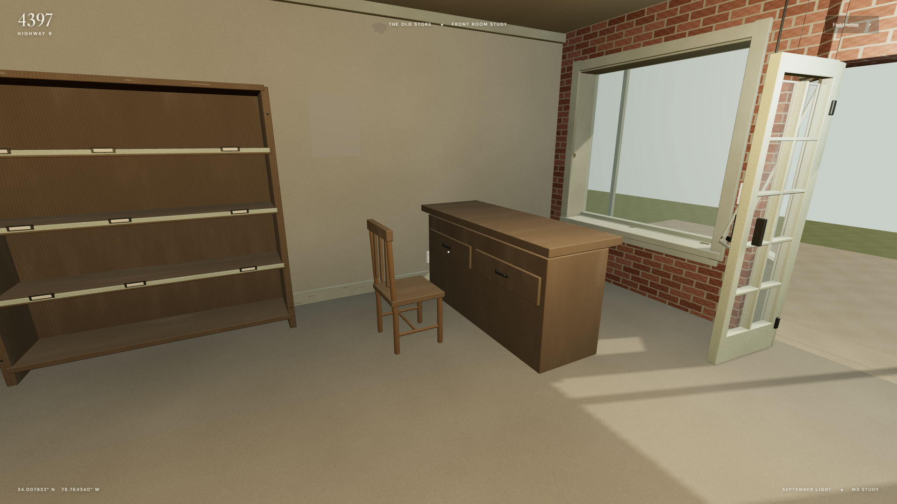
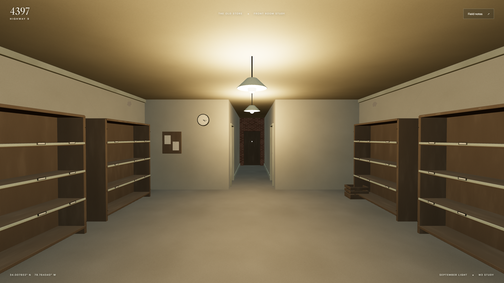
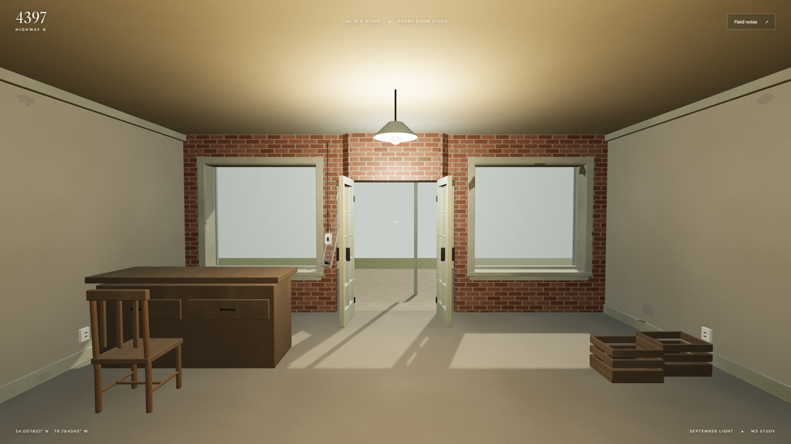
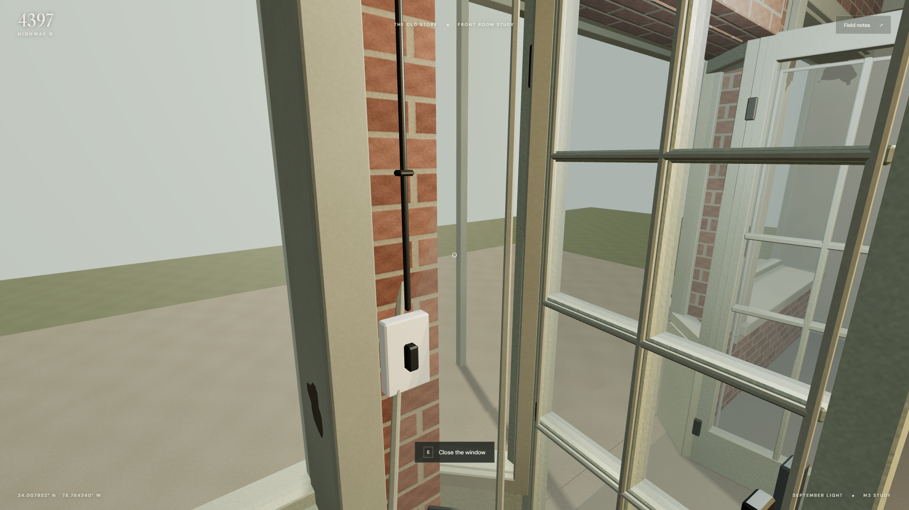
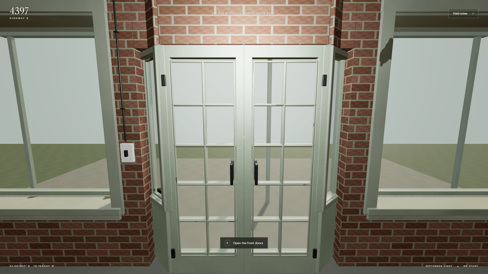
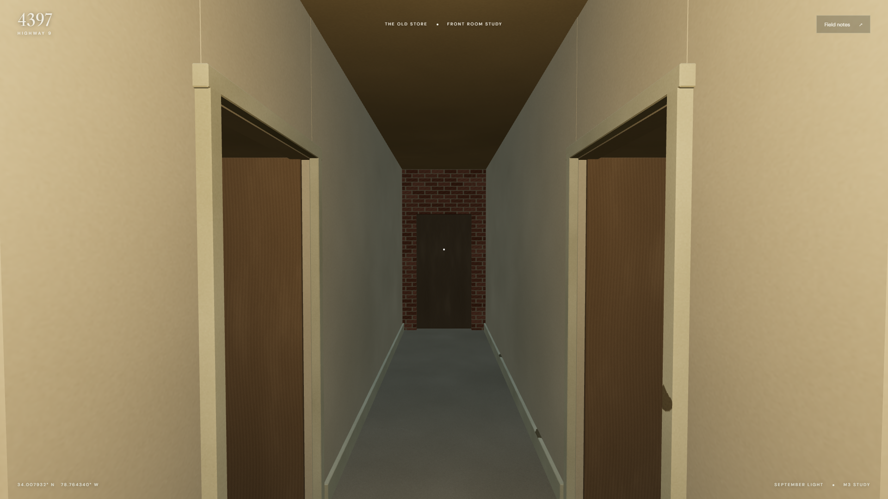

4397 Highway 9 · M3 · In Progress
The corrected interior.
Revision 2 restores the open M2 passage, corrects the recessed pane grid and interior window trim, and adds age and small interior details. The source preserves the approved shell and 45-degree entrance returns. The right pane tilts inward 15 degrees; the front doors and room light switch work.
Desktop keyboard/mouse is the provisional baseline. The visual benchmark and device budgets still need Brian's review. Exterior context beyond the apron and the rear rooms are unfinished.

The entrance and display windows. The material treatment is a first review candidate.
Brian's empty front-right chair, retained counter and sparse shelves.
The whole front room, with the switched lights on. The open passage leads to both storerooms and the centered rear door.
Walking-height view back toward the daylight.
The approved top-hinged pane. Approach from inside to close it when the pier blocks the exterior sightline.
Continuous two-column, five-row pane divisions and room-facing glazing stops.
The restored M2 passage, with both storeroom entrances accessible.